For the subsequent parts of this task, I used the following sets of images:
Left Image
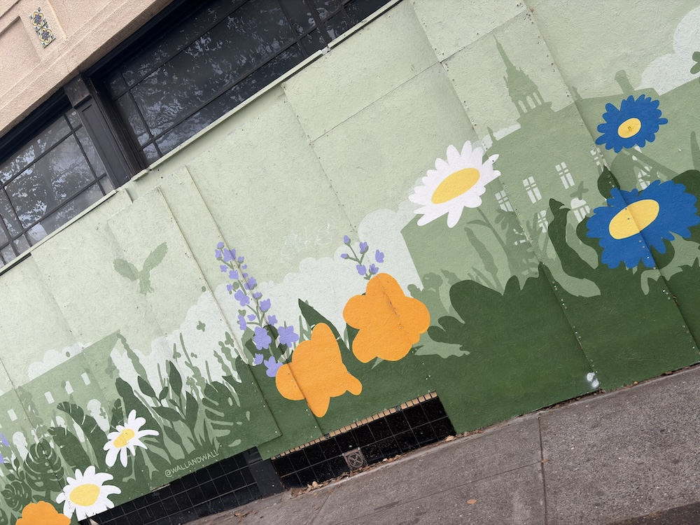
Size: 1000, 750 pixels
Taken on iPhone 17
Right Image
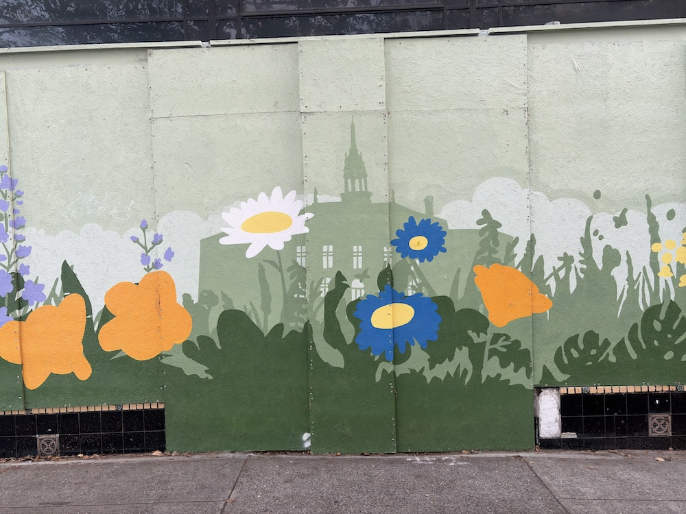
Size: 1000, 750 pixels
Taken on iPhone 17
Left Image
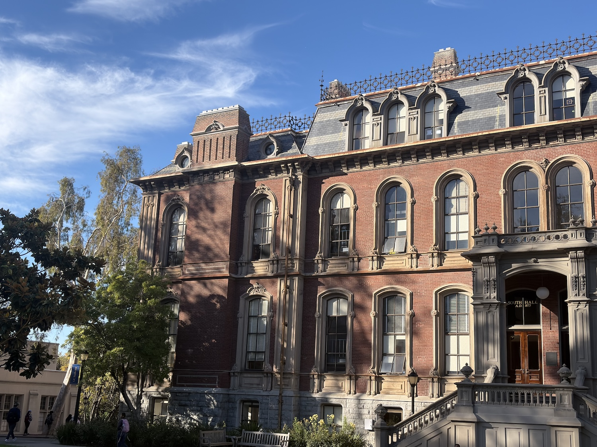
Size: 1500, 1125 pixels
Taken on iPhone 17
Right Image
Size: 1500, 1125 pixels
Taken on iPhone 17
Left Image
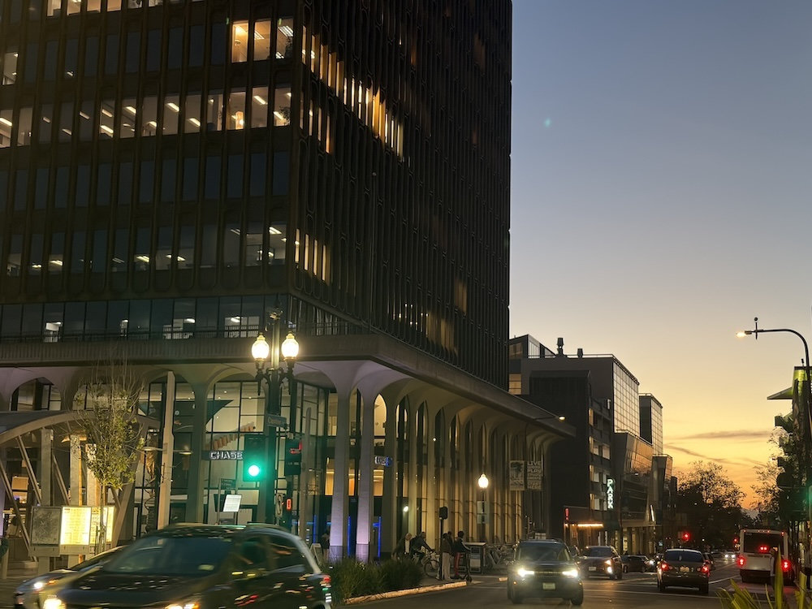
Size: 1000, 750 pixels
Taken on iPhone 17
Right Image
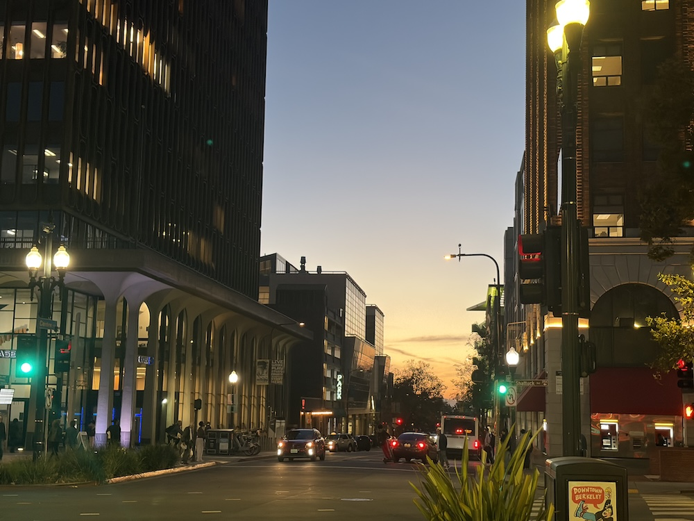
Size: 1000, 750 pixels
Taken on iPhone 17
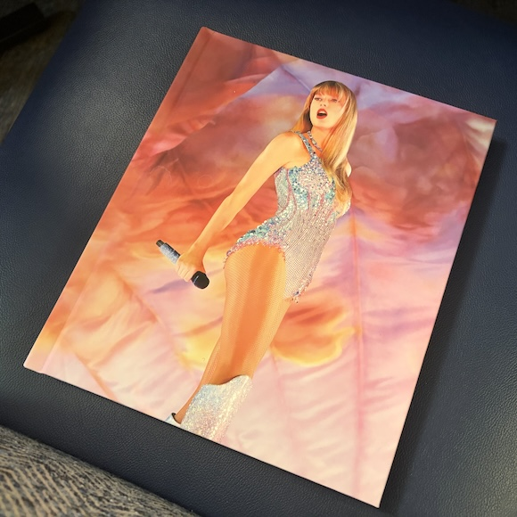
Size: 580, 580 pixels
Taken on iPhone 17
Book Measurements: 28.3 x 24.1 cm
Size: 600, 800 pixels
Taken on iPhone 17
Playbill Measurements: 21.5 x 13.6 cm
I also resized the images to be under 1500 pixels x 1500 pixels to reduce compute time. I put their pixel sizes underneath the photos.
In order to warp images to have matching perspectives, the homography has to be identified. The homography matrix is a projective transformation matrix that will map coordinates on an image plane onto its coordinates on another image plane.
I implemented the computeH(im1_pts, im2_pts) function, which uses least squares regression to construct the homography matrix. Least squares regression tries to minimize ||Ah - b||2. Therefore, I needed to construct matrix A and b to solve for h, which is a vector of the flattened homography matrix H.
Before constructing the matrices, I added a 3rd dimension to all coordinates in im1_pts and im2_pts, since projective transforms require 3 dimensions. The value for the 3rd dimension was simply 1. For example, coordinates (x, y) would become (x, y, 1).
Then the program constructed matrix A by creating a N * 3 x 9 matrix, where N is the number of coordinates. Each coordinate in im1_pts would have 3 rows that are of the form:
[[x y 1 0 0 0 0 0 0],
[0 0 0 x y 1 0 0 0],
[0 0 0 0 0 0 x y 1]]
Matrix b is a vector that consists of the flattened coordinates of the second image. This vector was N * 3, where N is the number of coordinates.
To solve for h, I used the following equation (ATA)-1ATb. Then to get H, I resized the vector to a 3x3 matrix.
Below is the gallery showing the correspondences between the images for my mosaics in part A.4, and the corresponding matrices A, b and H that my function calculated. To construct the homography matrices, I used between 8 - 12 points. To choose the best points, I identified any corners or edges that I could easily match between the two images. I also tried to space the points out around the image.
Left Image
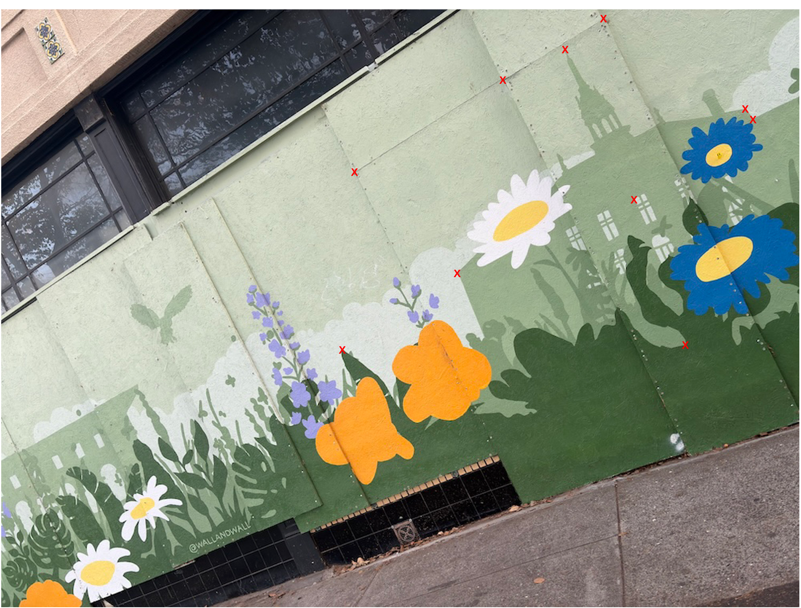
Coordinates (format of [x, y]): [753,18],[629,90],[442,206],[705,52],[426,428],[858,423],[571,331],[793,238],[942,138],[932,125]
Right Image
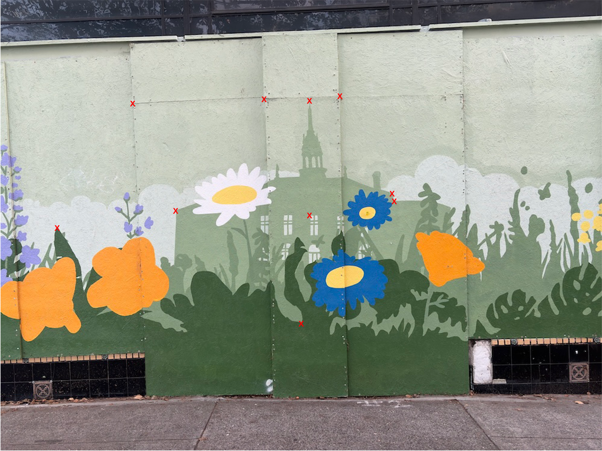
Coordinates (format of [x, y]): [562,165],[438,165],[220,173],[514,168],[94,378],[500,538],[292,350],[514,359],[652,335],[650,320]
Homography Matrix: [[ 8.40751972e-01 -4.08478919e-01 -6.55168847e+01]
[ 4.12282364e-01 8.45488889e-01 -1.68840968e+02]
[-3.90312782e-18 -2.81892565e-18 1.00000000e+00]]
Matrix A: [[753. 18. 1 0 0 0 0 0 0.] [ 0 0 0. 753. 18. 1 0 0 0.] [ 0 0 0 0 0 0. 753. 18. 1.] [629. 90 1 0 0 0 0 0 0.] [ 0 0 0. 629. 90 1 0 0 0.] [ 0 0 0 0 0 0. 629. 90 1.] [442. 206. 1 0 0 0 0 0 0.] [ 0 0 0. 442. 206. 1 0 0 0.] [ 0 0 0 0 0 0. 442. 206. 1.] [705. 52. 1 0 0 0 0 0 0.] [ 0 0 0. 705. 52. 1 0 0 0.] [ 0 0 0 0 0 0. 705. 52. 1.] [426. 428. 1 0 0 0 0 0 0.] [ 0 0 0. 426. 428. 1 0 0 0.] [ 0 0 0 0 0 0. 426. 428. 1.] [858. 423. 1 0 0 0 0 0 0.] [ 0 0 0. 858. 423. 1 0 0 0.] [ 0 0 0 0 0 0. 858. 423. 1.] [571. 331 1 0 0 0 0 0 0.] [ 0 0 0. 571. 331 1 0 0 0.] [ 0 0 0 0 0 0. 571. 331 1.] [793. 238. 1 0 0 0 0 0 0.] [ 0 0 0. 793. 238. 1 0 0 0.] [ 0 0 0 0 0 0. 793. 238. 1.] [942. 138. 1 0 0 0 0 0 0.] [ 0 0 0. 942. 138. 1 0 0 0.] [ 0 0 0 0 0 0. 942. 138. 1.] [932. 125. 1 0 0 0 0 0 0.] [ 0 0 0. 932. 125. 1 0 0 0.] [ 0 0 0 0 0 0. 932. 125. 1.]]
Matrix b: [562, 165, 1, 438, 165, 1, 220, 173, 1, 514, 168, 1, 94, 378, 1, 500, 538, 1, 292, 350, 1, 514, 359, 1, 652, 335, 1, 650, 320, 1]
Left Image
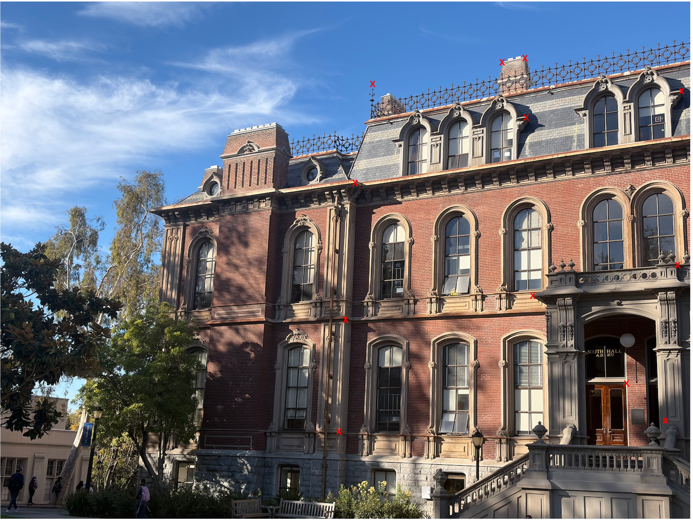
Coordinates (format of [x, y]): [811,181],[1090,136],[1141,125],[1479,199],[1142,255],[773,396],[752,691],[739,943],[1472,576],[1157,646],[1358,833],[1447,916]
Right Image
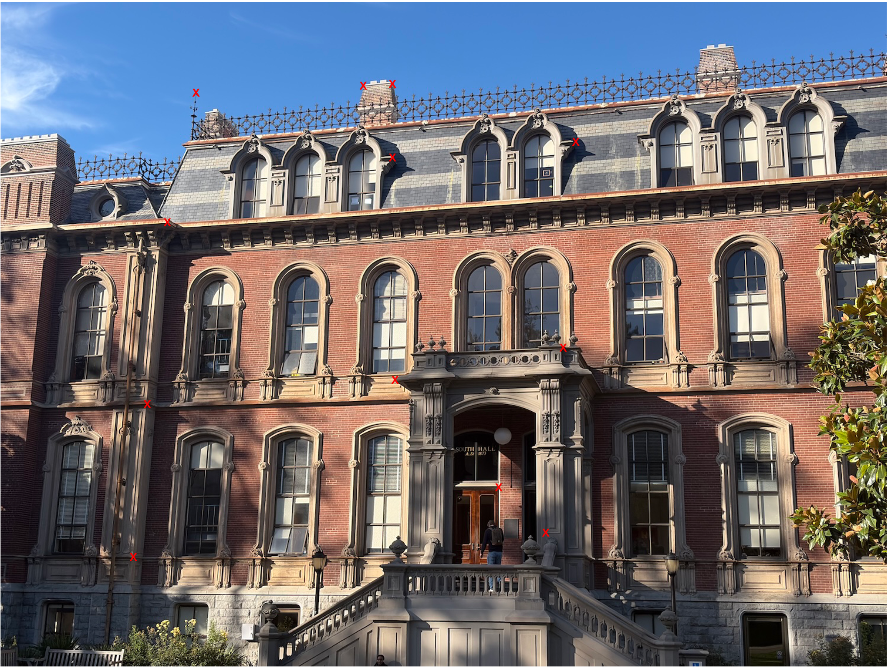
Coordinates (format of [x, y]): [331,160],[613,144],[663,139],[969,240],[662,266],[286,376],[252,683],[225,944],[952,588],[667,646],[842,825],[920,903]
Homography Matrix: [[ 9.71071737e-01 -4.44415333e-02 -4.44201480e+02]
[ 3.26434999e-02 9.78168311e-01 -2.42006944e+01]
[ 6.50521303e-19 8.67361738e-19 1.00000000e+00]]
Matrix A: [[8.110e+02 1.810e+02 1 0 0 0 0 0 0] [0 0 0 8.110e+02 1.810e+02 1 0 0 0], [0 0 0 0 0 0 8.110e+02 1.810e+02 1], [1.090e+03 1.360e+02 1 0 0 0 0 0 0], [0 0 0 1.090e+03 1.360e+02 1 0 0 0], [0 0 0 0 0 0 1.090e+03 1.360e+02 1], [1.141e+03 1.250e+02 1 0 0 0 0 0 0], [0 0 0 1.141e+03 1.250e+02 1 0 0 0], [0 0 0 0 0 0 1.141e+03 1.250e+02 1], [1.479e+03 1.990e+02 1 0 0 0 0 0 0], [0 0 0 1.479e+03 1.990e+02 1 0 0 0], [0 0 0 0 0 0 1.479e+03 1.990e+02 1], [1.142e+03 2.550e+02 1 0 0 0 0 0 0], [0 0 0 1.142e+03 2.550e+02 1 0 0 0], [0 0 0 0 0 0 1.142e+03 2.550e+02 1], [7.730e+02 3.960e+02 1 0 0 0 0 0 0], [0 0 0 7.730e+02 3.960e+02 1 0 0 0], [0 0 0 0 0 0 7.730e+02 3.960e+02 1], [7.520e+02 6.910e+02 1 0 0 0 0 0 0], [0 0 0 7.520e+02 6.910e+02 1 0 0 0], [0 0 0 0 0 0 7.520e+02 6.910e+02 1], [7.390e+02 9.430e+02 1 0 0 0 0 0 0], [0 0 0 7.390e+02 9.430e+02 1 0 0 0], [0 0 0 0 0 0 7.390e+02 9.430e+02 1], [1.472e+03 5.760e+02 1 0 0 0 0 0 0], [0 0 0 1.472e+03 5.760e+02 1 0 0 0], [0 0 0 0 0 0 1.472e+03 5.760e+02 1], [1.157e+03 6.460e+02 1 0 0 0 0 0 0], [0 0 0 1.157e+03 6.460e+02 1 0 0 0], [0 0 0 0 0 0 1.157e+03 6.460e+02 1], [1.358e+03 8.330e+02 1 0 0 0 0 0 0], [0 0 0 1.358e+03 8.330e+02 1 0 0 0], [0 0 0 0 0 0 1.358e+03 8.330e+02 1], [1.447e+03 9.160e+02 1 0 0 0 0 0 0], [0 0 0 1.447e+03 9.160e+02 1 0 0 0], [0 0 0 0 0 0 1.447e+03 9.160e+02 1]]
Matrix b: [331, 160, 1, 613, 144, 1, 663, 139, 1, 969, 240, 1, 662, 266, 1, 286, 376, 1, 252, 683, 1, 225, 944, 1, 952, 588, 1, 667, 646, 1, 842, 825, 1, 920, 903, 1]
Left Image
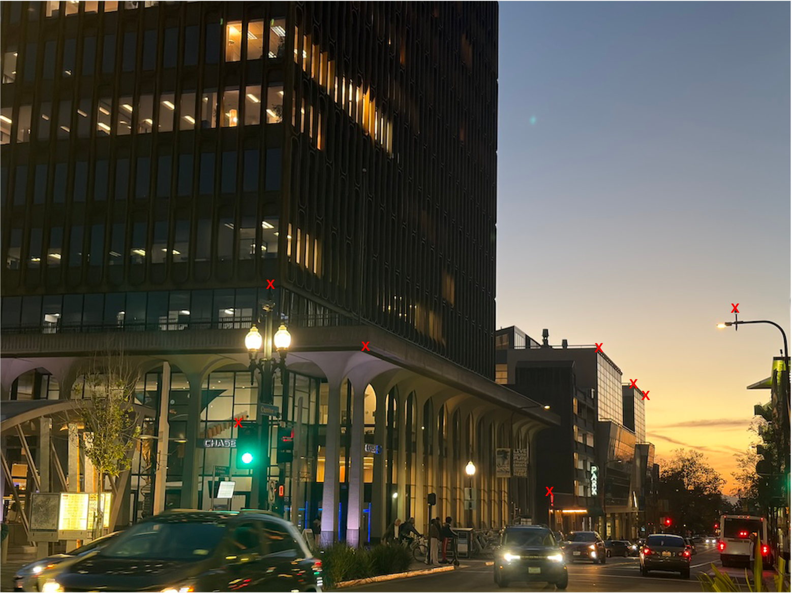
Coordinates (format of [x, y]): [342,368],[302,541],[465,442],[695,630],[756,447],[801,495],[816,507],[932,398]
Right Image
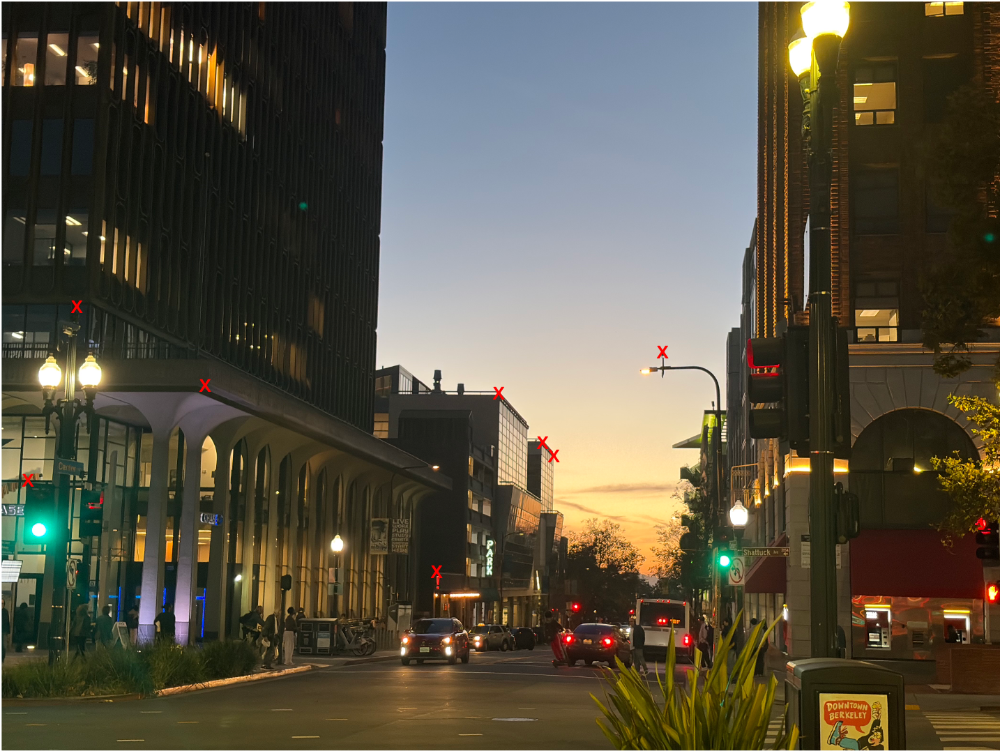
Coordinates (format of [x, y]): [74,309],[26,490],[207,390],[433,579],[499,400],[541,447],[554,461],[663,359]
Homography Matrix: [[ 1.01186939e+00 -5.14521745e-05 -2.71555472e+02]
[ 2.02093278e-02 9.97514136e-01 -6.08416960e+01]
[-4.98732999e-18 -8.67361738e-19 1.00000000e+00]]
Matrix A: [[342. 368. 1 0 0 0 0 0 0] [ 0 0 0. 342. 368. 1 0 0 0] [ 0 0 0 0 0 0. 342. 368. 1] [302. 541 1 0 0 0 0 0 0] [ 0 0 0. 302. 541 1 0 0 0] [ 0 0 0 0 0 0. 302. 541 1] [465. 442. 1 0 0 0 0 0 0] [ 0 0 0. 465. 442. 1 0 0 0] [ 0 0 0 0 0 0. 465. 442. 1] [695. 630 1 0 0 0 0 0 0.] [ 0 0 0. 695. 630 1 0 0 0.] [ 0 0 0 0 0 0. 695. 630 1] [756. 447. 1 0 0 0 0 0 0] [ 0 0 0. 756. 447. 1 0 0 0] [ 0 0 0 0 0 0. 756. 447. 1] [801. 495. 1 0 0 0 0 0 0] [ 0 0 0. 801. 495. 1 0 0 0] [ 0 0 0 0 0 0. 801. 495. 1] [816. 507. 1 0 0 0 0 0 0] [ 0 0 0. 816. 507. 1 0 0 0] [ 0 0 0 0 0 0. 816. 507. 1] [932. 398. 1 0 0 0 0 0 0] [ 0 0 0. 932. 398. 1 0 0 0] [ 0 0 0 0 0 0. 932. 398. 1]]
Matrix b: [74, 309, 1, 26, 490, 1, 207, 390, 1, 433, 579, 1, 499, 400, 1, 541, 447, 1, 554, 461, 1, 663, 359, 1]
All correspondence points were found using the tool given: https://cal-cs180.github.io/fa23/hw/proj3/tool.html
I attempted to rectify an image of my "Taylor Swift: the Era's Tour" book and a playbill of "Hamilton". I took images of both items at an angle so that they don't look rectangular in the image. To rectify the images and make them rectangular, I measured the dimensions of these items and used these to identify the target points to create the homography matrix that will be used to warp my images.
Below are the results and coordinates I used:
Original
Coordinates (format of [x, y]): [228, 30], [556, 135], [33, 410], [420, 566]
Nearest Neighbor Interpolation
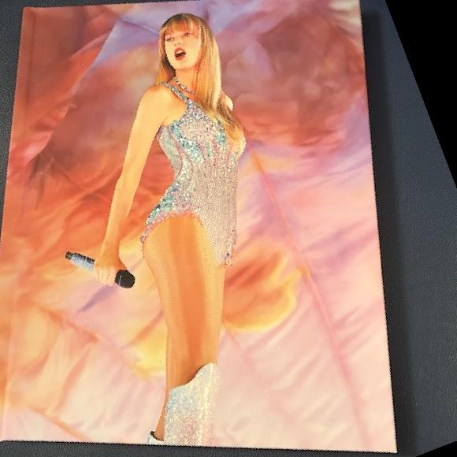
Bilinear Interpolation
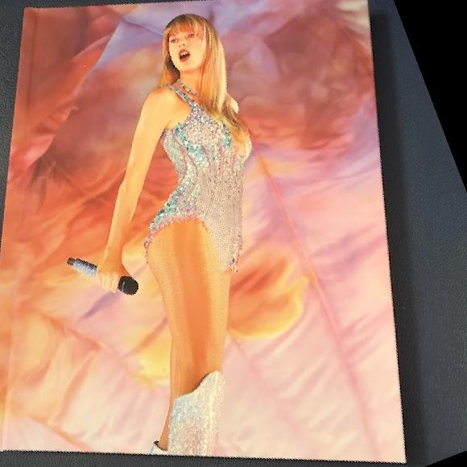
Rectangular Target Coordinates (format of [x, y]): [0, 0], [482, 0], [0, 566], [482, 566]
Homography Matrix: [[ 1.16361527e+00 4.71302030e-01 -2.53286925e+02],
[-4.47201523e-01 1.21190665e+00 7.56006985e+01],
[-8.67361738e-19 0.00000000e+00 1.00000000e+00]]
Matrix A: [[228. 30 1 0 0 0 0 0 0], [ 0 0 0. 228. 30 1 0 0 0], [ 0 0 0 0 0 0. 228. 30 1], [556. 135. 1 0 0 0 0 0 0], [ 0 0 0. 556. 135. 1 0 0 0], [ 0 0 0 0 0 0. 556. 135. 1], [ 33. 410 1 0 0 0 0 0 0.], [ 0 0 0. 33. 410 1 0 0 0], [ 0 0 0 0 0 0. 33. 410 1], [420. 566. 1 0 0 0 0 0 0.], [ 0 0 0. 420. 566. 1 0 0 0], [ 0 0 0 0 0 0. 420. 566. 1]]
Matrix b: [0, 0, 1, 482, 0, 1, 0, 566, 1, 482, 566, 1]
Original
Coordinates (format of [x, y]): [423, 81], [576, 307], [36, 305], [255, 594]
Nearest Neighbor Interpolation
Bilinear Interpolation
Rectangular Target Coordinates (format of [x, y]): [0, 0], [544, 0], [0, 860], [544, 860]
Homography Matrix: [[ 9.80017126e-01 1.36343842e+00 -4.82741833e+02],
[-1.59212595e+00 1.15883482e+00 5.70605515e+02],
[ 1.30104261e-18 4.33680869e-19 1.00000000e+00]]
Matrix A: [[423 81 1 0 0 0 0 0 0], [ 0 0 0 423 81 1 0 0 0], [ 0 0 0 0 0 0 423 81 1], [576 307 1 0 0 0 0 0 0], [ 0 0 0. 576 307 1 0 0 0], [ 0 0 0 0 0 0. 576 307 1], [ 36 305 1 0 0 0 0 0 0], [ 0 0 0 36 305 1 0 0 0], [ 0 0 0 0 0 0 36 305 1], [255 594 1 0 0 0 0 0 0], [ 0 0 0 255. 594 1 0 0 0], [ 0 0 0 0 0 0 255 594 1]]
Matrix b: [0, 0, 1, 544, 0, 1, 0, 860, 1, 544, 860, 1]
My Observations and Comparisons: I did not see any noticeable difference between the nearest neighbors and bilinear interpolation results. Both functions created relatively smooth images. However, I noticed that when I zoomed in, the image produced by the bilinear interpolation was slightly smoother at the edges between the book/playbill and the background. However, this was not a very big difference.
This is different from what I expected, as I expected bilinear interpolation to create smoother images. Bilinear interpolation takes the weighted average color of the 4 nearest pixels for interpolated pixels, creating a more smooth transition between pixels. While nearest neighbor interpolation just takes the color of the nearest pixel, making the color transition less smooth ideally.
All correspondence points were found using https://pixspy.com/
To combine both images, I used the alpha mask I recovered from my image warping function in part A.3. The warped image would be masked using image * alpha_mask, and the non-warped image would be masked using image * (1 - alpha_mask). These masks were applied at the Laplacian levels, which is discussed below.
To reduce the edge artifacts of the individual images, I used a 2-level Laplacian stack to blend the "seam" between the left and right images. This 2-level Laplacian stack consists of:
After all this, I added together both Laplacian levels of both images together to get the blended mosaic image! However, my images still had a "seam" in between them after Laplacian stack blending, which I identified to be due to high-frequency noise at the edges of my image that was being captured in level 0 of my Laplacian stack. To eliminate these edge artifacts, I expanded the shape of my mask by 15 pixels in both the positive and negative x and y directions. Below are the before and after comparisons:
Mosaic Before Expanding the Mask
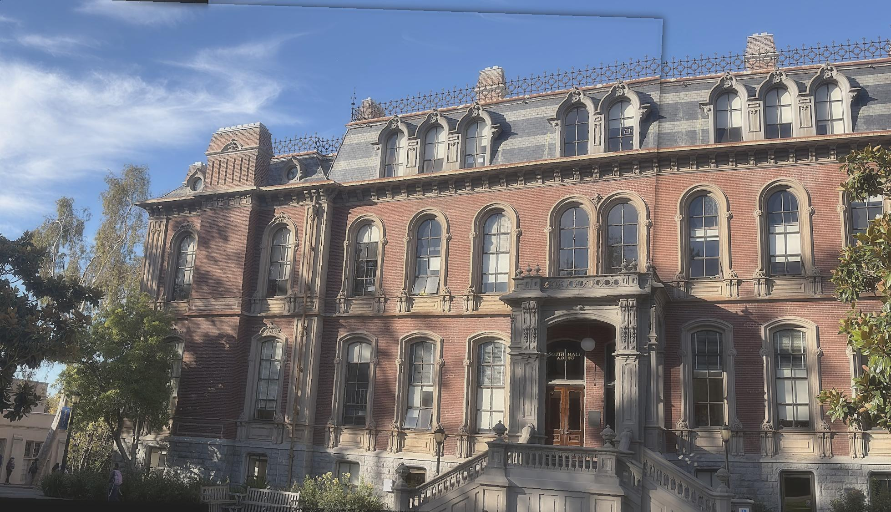
Mosaic After Expanding the Mask
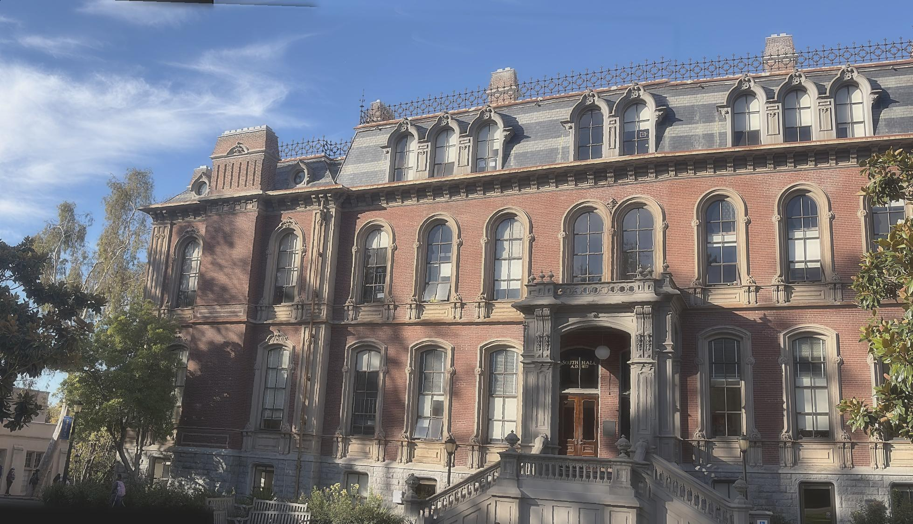
As you can see, the "seam" is completely removed by this adjustment in the mask. Even in the Laplacian level 0 image, there is no more high frequency seam after masking!
Below is the gallery of my 3 mosaics:
Left Image
Right Image
Left Warped Image
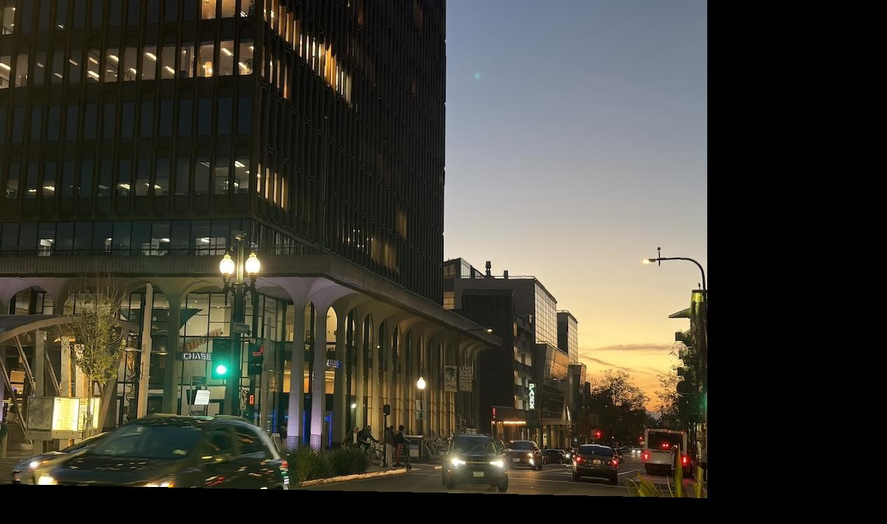
Alpha Mask
Completed Image Mosaic
Left Image
Right Image
Left Warped Image
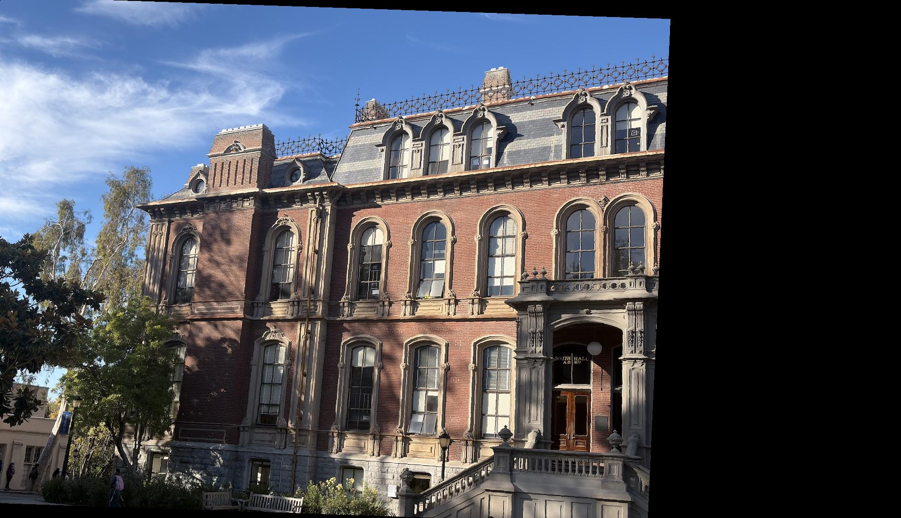
Alpha Mask
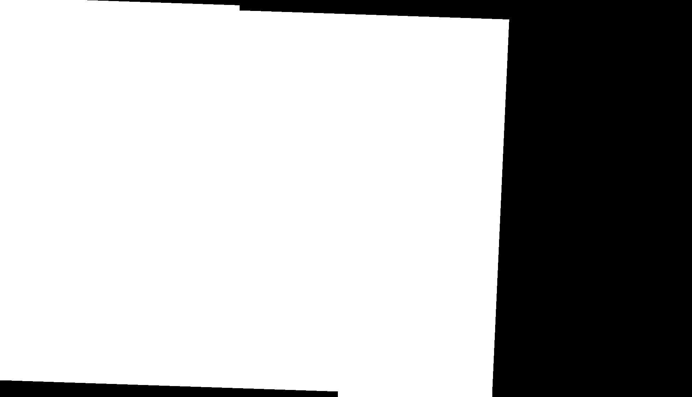
Completed Image Mosaic
Left Image
Right Image
Left Warped Image
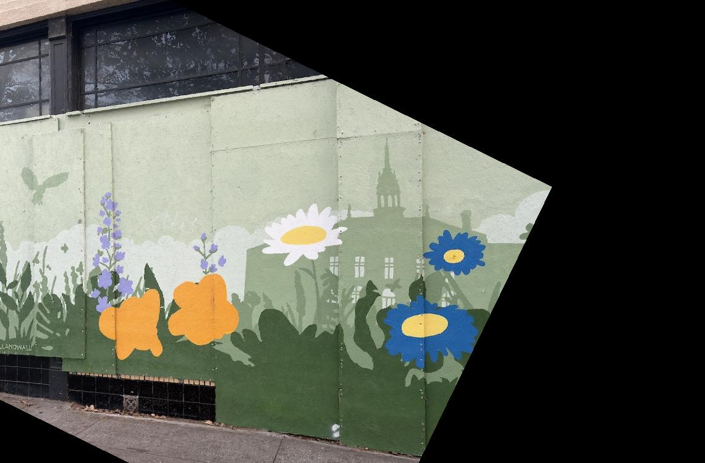
Alpha Mask
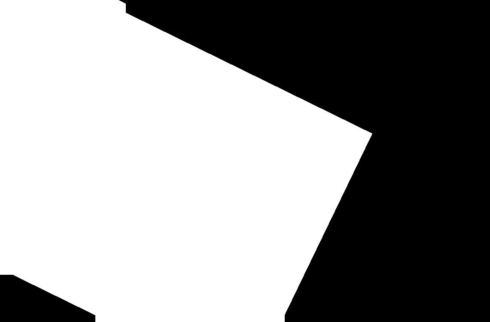
Completed Image Mosaic
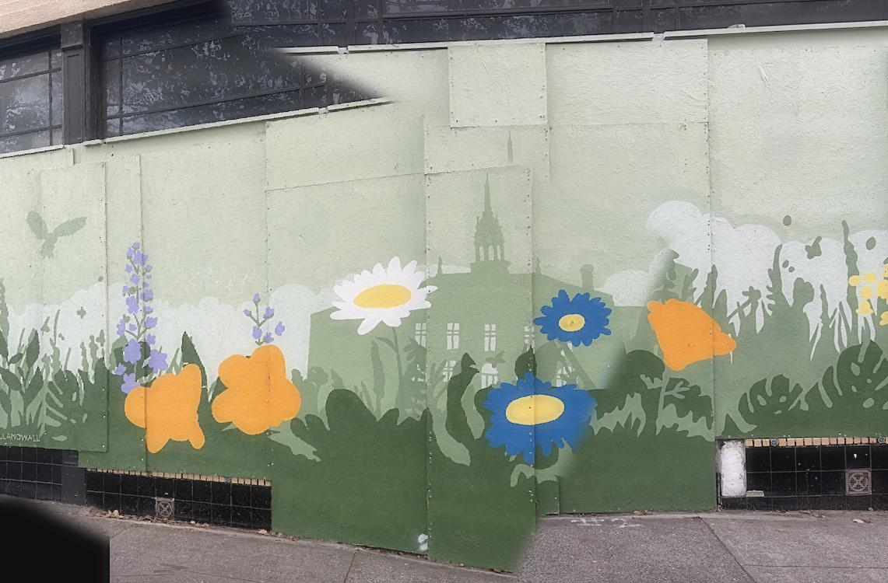
Here is the Laplacian levels for my most successful mosaic: Sunset on Shattuck
Left Image
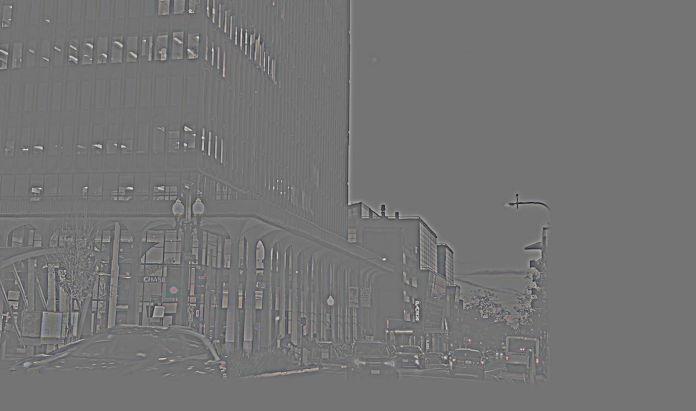
Right Image
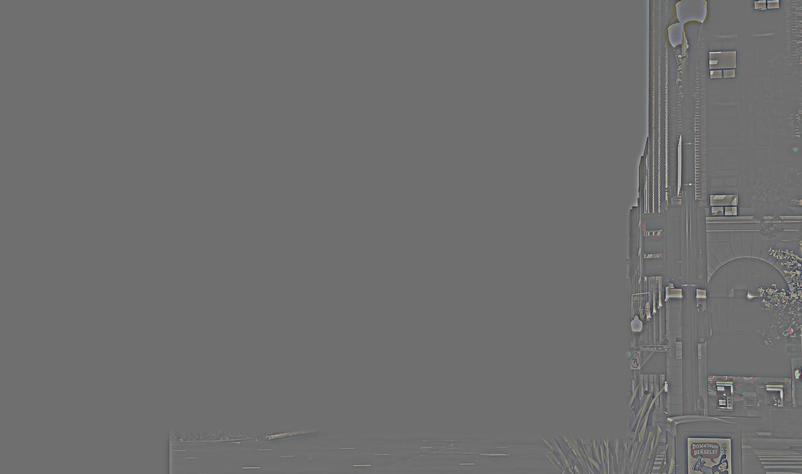
Left Image
Right Image
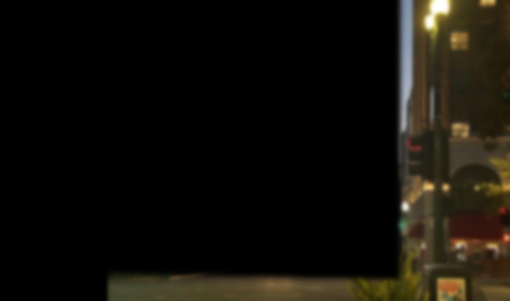
Completed Image Mosaic
I also implemented a 2-level Laplacian pyramid to test if there would be any significant improvements. This consisted of:
The masks for both level 0 and 1 are the same as with the Laplacian stack. However, I noticed no significant difference between the two. So I stuck to using my 2-level Laplacian stack for all other images since it was easier for me to adjust the sigmas used, which gave me more control over blending.
Left Image
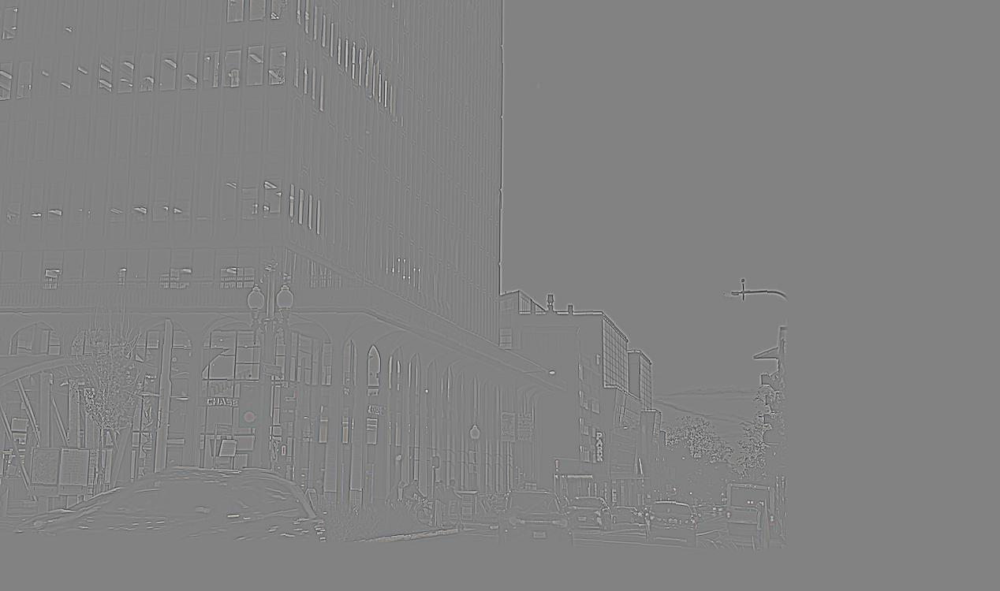
Right Image
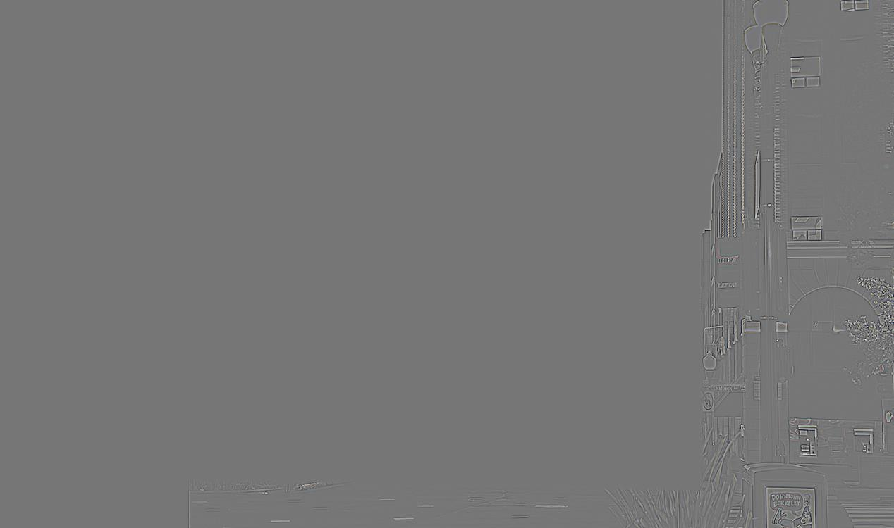
Left Image
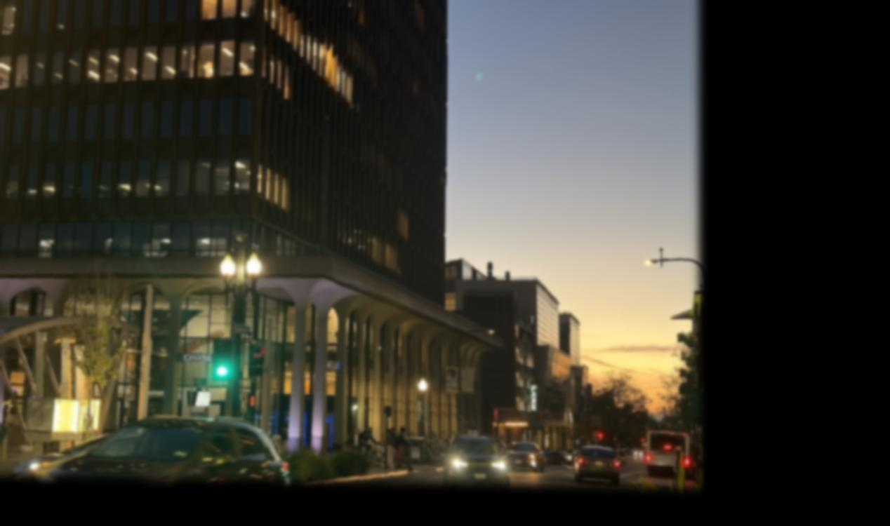
Right Image
Completed Image Mosaic
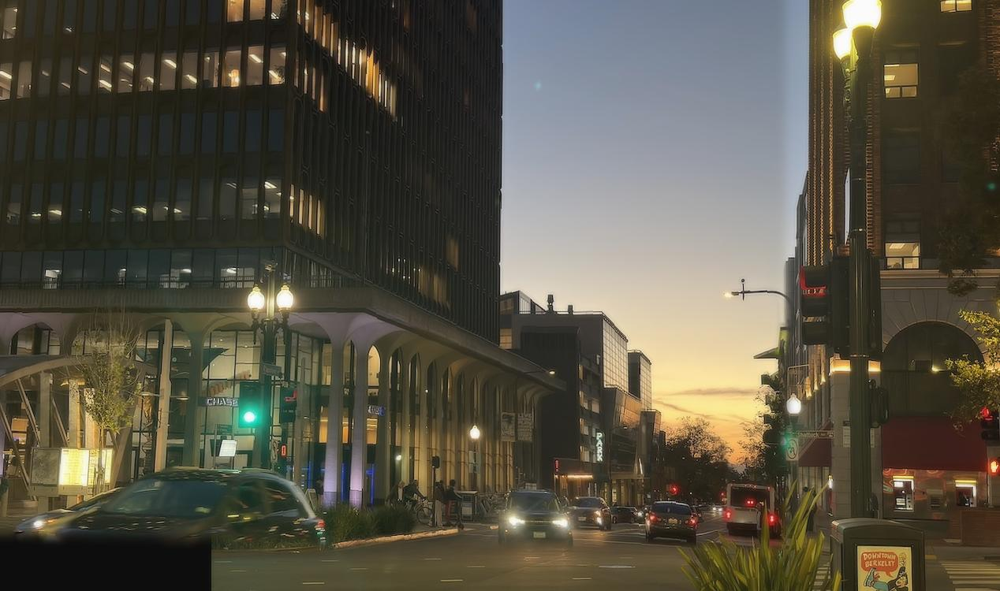